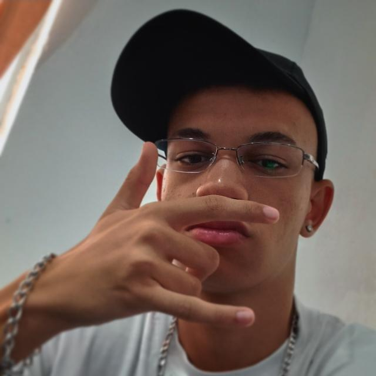
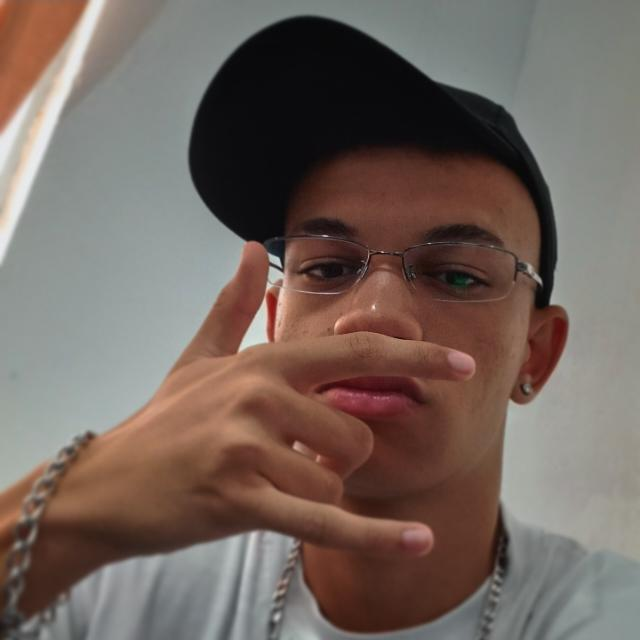

Prazer, me chamo Pedro das Neves, tenho 17 anos e estou cursando o terceiro semestre de Design Gráfico na Faculdade Theobaldo de Nigris, localizada no bairro da Mooca.
Meu curso possui 1 ano e meio de duração, contendo módulos como: Manipulação de Imagens (Photoshop), Ilustração (Ilustrator & CorelDraw), Edição e pós-produção de vídeo (Premier & After Effects), além do desenvolvimento de logos e embalagens.
Esse site é a prova dos meus conhecimentos já que nesse último semestre venho aprendendo sobre HTML e CSS
Além do curso de Design Gráfico, estou cursando o terceiro ano do ensino médio na instituição de ensino Sesi.
Fora da escola estudo sobre Produção Musical mas não faço nenhum tipo de curso, venho aprendendo sobre o assunto por conta própia desde meus 13 anos quando descobri minha paixão pela música, na verdade, sempre fui apaixonado pela arte em geral, mas foi a música que me abraçou e não me soltou mais.
Na pandemia, sozinho em casa, desenvolvi meus dois hobbies favoritos: Tocar violão e teclado, aperfeiçoando minhas habilidades a cada dia e colocando em prática o que aprendia em vídeos do YouTube.
Se puder dar uma passada no meu canal do YouTube ficarei grato, lá posto músicas no estilo Trap e Funk, se curtir da uma moral nas plataformas digitais como Spotify, Deezer, YouTube Music etc.